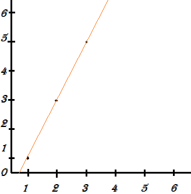
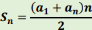
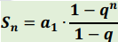
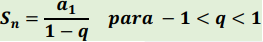

Existem sequências numéricas, essas sequências numéricas podem ser finitas ou infinitas, e existem muitas sequências, mas, para que cada sequência tenha sentido se ser de tal forma, ela precisa ter a sua fórmula, isso para poder explicar o por que a sequência segue tal ritmo de caracteres, e, para mostrar qual é o próximo número da sequência, essa fórmula é apenas uma das formas que podemos explicar a sequência, por isso existe a lei de formação.
Para se estabelecer a lei de formação, tem três formas, sendo elas:
Fórmula de recorrência: tem uma regra para identificar o primeiro termo e outra regra para somar o próximo termo a partir do termo anterior.
Expressando cada termo em função da sua posição n: é feita uma fórmula que faz com que an seja em função a n
Propriedade dos termos: é explicada a propriedade que os termos que tem na sequência devem seguir.
A progressão aritmética é uma sequência de números que a partir do segundo termo começa a ser somado com o termo anterior, mas, a ordem que vai ser somada vai depender de um termo conhecido como “r”. Ou seja, se tivermos um primeiro termo da sequência como “1”, e o nosso r como “2”, vai ir somando 2 unidades do último termo, ficando “1, 3, 5, 7, 9, 11...”.
O valor do “r” vai dizer como será a sequência, se ele for negativo, o termo seguinte será menor que o anterior, se for positivo, o termo seguinte será maior que o anterior(como no exemplo citado), e, se for igual a 0, a sequência terá todos os termos igual ao primeiro.
Para encontrar um termo que esteja na 650º posição de uma sequencia com 1000 termos, seria muito demorado para encontrar se fazer um por um dos termos, então por isso existe a Fórmula do Termo Geral.
Fórmula do Termo Geral -> an = a1(n - 1)r
an – Termo Geral
a1 - Primeiro termo da sequência
n - Número de termos ou a posição do termo
r – Razão
Para colocar uma PA em um gráfico é simples, no eixo x fica a posição do termo, e, no eixo y fica o valor daquele termo, para ter um exemplo disso, irei fazer o gráfico do exemplo que citei de uma sequência anteriormente.

Na interpolação aritmética, chamados o primeiro termo e o ultimo termo de uma PA finita de extremos e o que fica entre eles de interpolar, com símbolo “k”. Para saber o total de termos da PA, usasse a seguinte fórmula: n = k + 2. Para encontrar os termos da interpolar, precisa encontrar a razão.
Para somar todos os termos de uma PA finita de uma forma rápida e fácil, usamos a seguinte fórmula:

Na Progressão geométrica se multiplica o termo pelo anterior, através de uma constante que é representada pelo símbolo “q”, por exemplo, o primeiro termo de uma sequência é 2 e o “q” é 2, temos o seguinte resultado “2, 4, 8, 16, 32, 64...”
O valor do “q” dirá como será a sequência, se ele for maior que 1, será crescente, tendo o termo seguinte maior que o anterior. Se o “q” for igual a 1, todos os termos serão igual ao primeiro termo, mas, se o primeiro termo for 0, independente de qual será o valor de “q”, todos os termos serão 0, tendo uma sequência constante. Se o “q” tiver um valor maior que 0 e menor que 1, ou, um valor negativo, a sequência será decrescente, pois o termo seguinte será menor que o termo anterior. Se o “q” for igual a 0, o termo seguinte terá um sinal diferente do termo anterior, tendo uma sequência com sinais alternados. Também existe a possibilidade de o primeiro termo ser um número diferente de 0 e o resto da sequência ser igual a 0, sendo essa uma sequência estacionária.
Para encontrar um determinado termo em uma sequência em uma progressão geométrica, usamos o Termo Geral, que tem a seguinte fórmula:
an = a1 * qn-1
an – Termo Geral
a1 – Primeiro Termo
q - Razão
n – Numero total de termos ou a posição do termo
Na interpolação geométrica, chamados o primeiro termo e o ultimo termo de uma PG finita de extremos e o que fica entre eles de interpolar, com símbolo “k”. Para saber o total de termos da PG, usasse a seguinte fórmula: n = k + 2. Para encontrar os termos da interpolar, precisa encontrar a razão.
Para somarmos todos os termos de uma PG finita, usamos uma fórmula, mas para isso, o ”q“ precisa ser diferente de 1.

Para somar os termos de uma PG infinita, o ”q“ deve ser maior que -1 e menor que 1, e par afazer essa soma, usamos a seguinte fórmula:

Minha opinião sobre o conteúdo
Minha opinião sobre esse conteúdo é bem dividida, por que eu acho a PA fácil de entender, e já a PG eu acho mais complicada. É bem interessante estudar essas sequências numéricas, até aqui na realização do portfólio, não consegui compreender muito bem como se coloca uma PG em um gráfico, comparado aos outros conteúdos que eu escolhi, esse é o mais complicadinho pra mim.